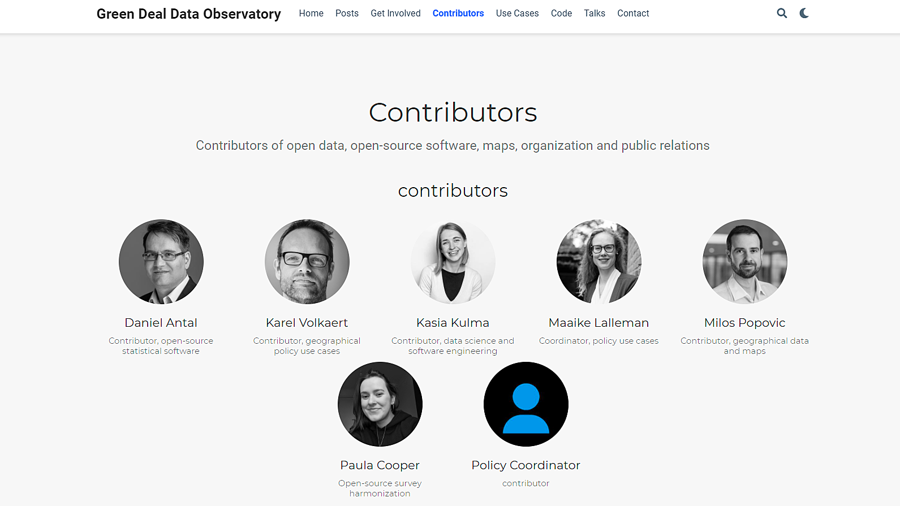

5 Team
5.1 Reprex
The entire Reprex team is made of open data enthusiasts, freelancers, who joined forces in August 2020 to get into the world’s second ranked university backed, scientific incubator to try to form an open source, open data business model, which is an important aspect of this prize. Our mission was to modernize the concept of ‘data observatories,’ recognized and practiced by EU, OECD, UNESCO and other global organizations, but at a very low technological and data science level.
We try to form meaningful open collaborations in the open data, open science, open policy world and create sustainable applications. This prize is not a Netflix Prize, where entire computer science departments were fighting for the one million dollars, but the EU Commission, the World Bank, the EU intellectual property office, etc, are there, and it is still one of the most prestigious public policy data prizes in the world. It requires a dedicated team to win, and offers great career opportunities for the winners.
Reprex is technically an early stage startup, with no significant revenues in this form, but it already formed partnership with leading universities in the world, and negotiating partnership with leading business research organizations, too.
People who are committed to contest the prize for us, do not necessarily have to become members of the Reprex team, but they are welcome to – our entire philosophy is that we try to create a sustainable enterprise that can participate in open collaborations with universities, NGOs and business research entities based on very strong ethical values of Open Policy Analysis and Trustworthy AI.
Our mission coincides with that of the Datathon – we try to build a sustainable business and /or social enterprise model to make data science work sustainable in culture, environment protection, climate policy and other fields where the best knowledge of data and a strong ethical compass is needed.
